Ficha de la propiedad
Ipías · Santa Cruz · Bolivia
Superficie
Superficie total titulada1.732,14 ha
Pastura sembrada550 ha · brachiaria
Potreros delanteros250 ha
Potreros de fondo300 ha
Monte1.182 ha
550 ha sembradas
1.182 ha de monte
Agua
Pozos perforados2 · 150 m y 100 m
Bombas impulsoras2
Atajados5
Bebederos6 · 3.000 L c/u
Red de politubo a las plazas7,1 km
Campamento e infraestructura
Vivienda de encargado1 · con baño y tanque de agua
Vivienda de trabajador1
Corralcepo, balanza y divisiones
EnergíaCRE monofásica
Alambradopotreros divididos
Acceso y situación
Distancia desde Ipías25 km
Puente de ingresopara camiones
Documentacióntítulo y plano en regla
Alcance de la ventapropiedad completa
Precioa consulta
La venta comprende la tierra y todas sus mejoras. La propiedad se encuentra actualmente arrendada; la fecha de entrega se conversa con el comprador.
Planos
Perímetro y potreros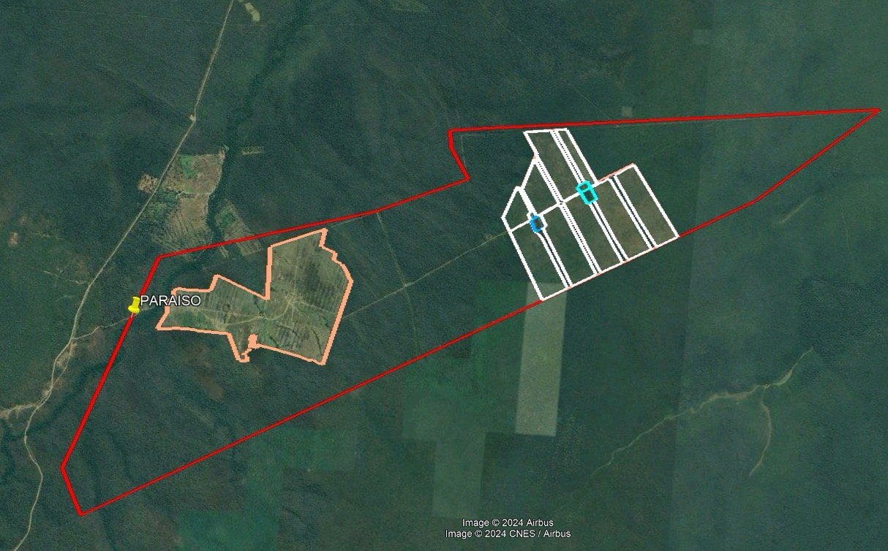
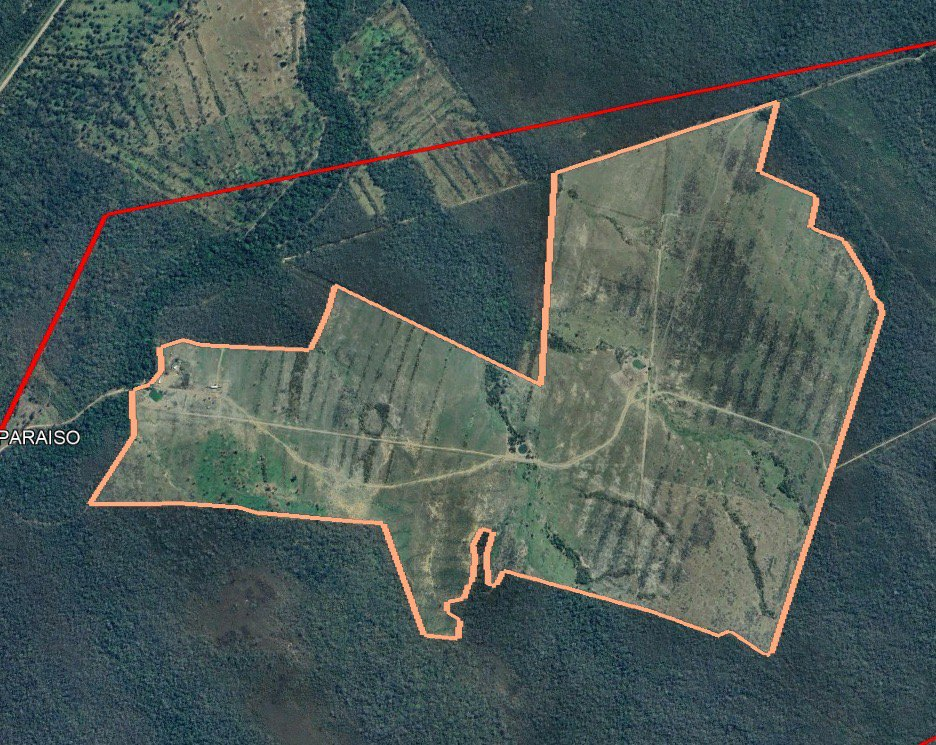
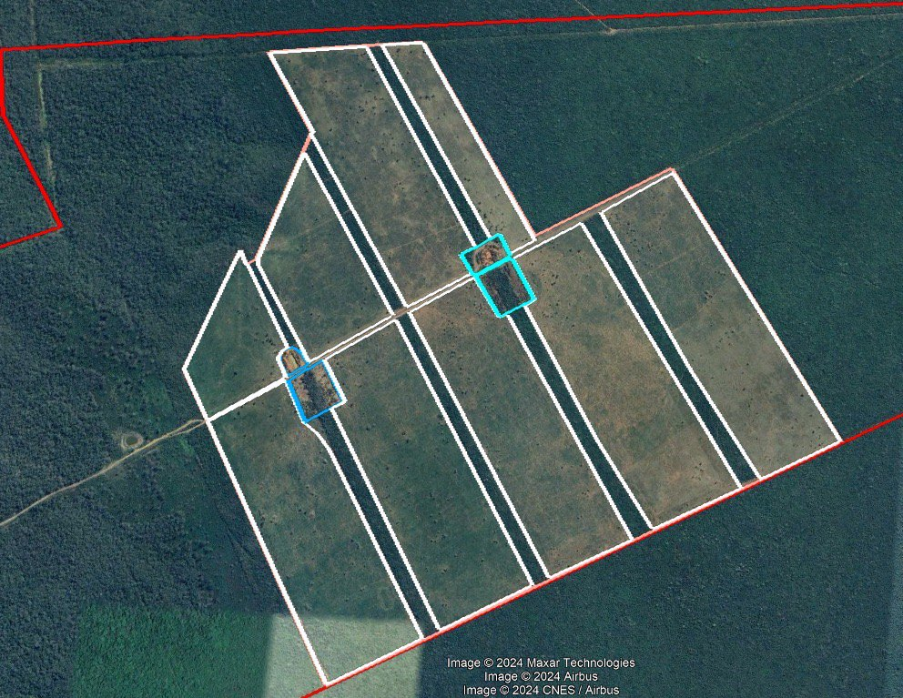
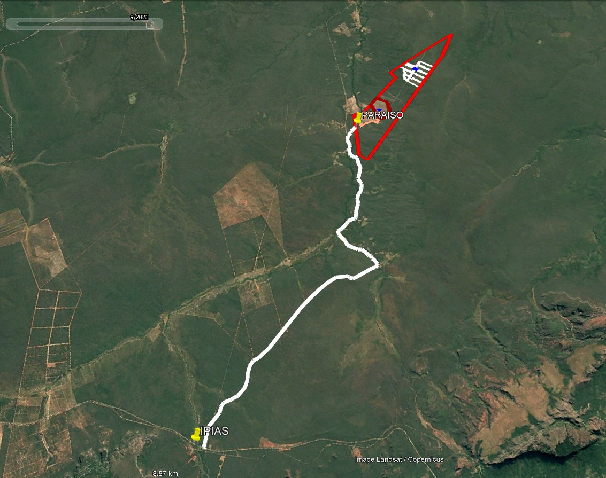
Registro fotográfico
Julio 2026
Corral y manejo
Corral y galpón de manejo
Manga
Embarcadero
Cepo y balanza
Cepo — lateral
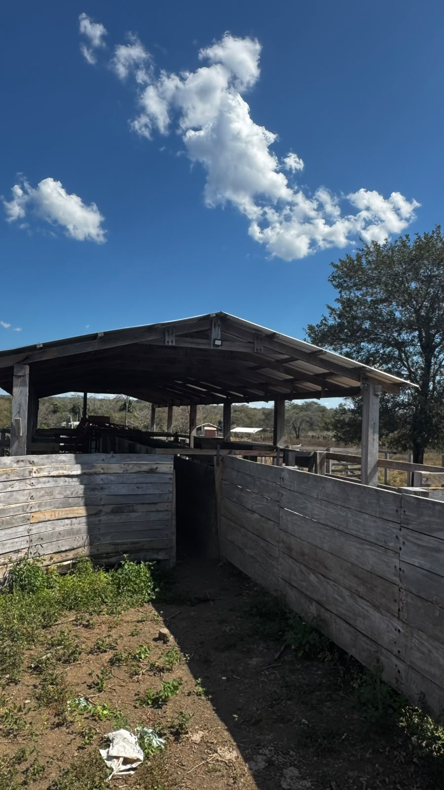
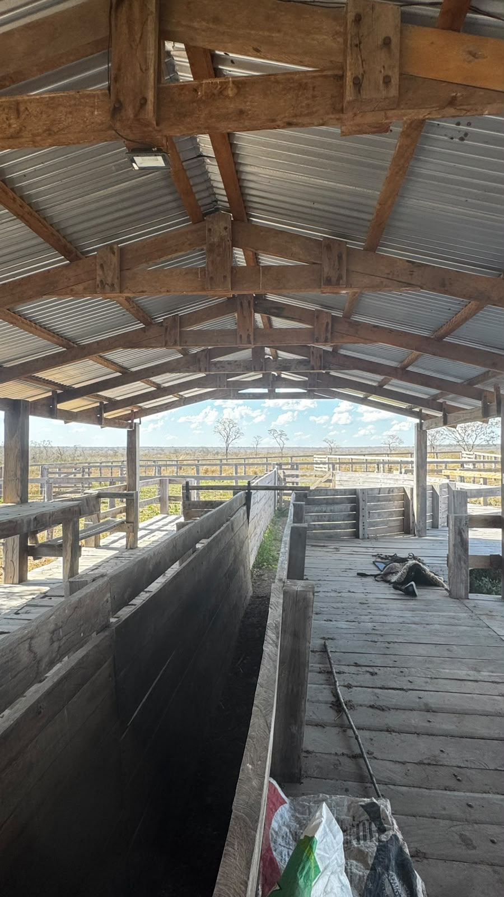
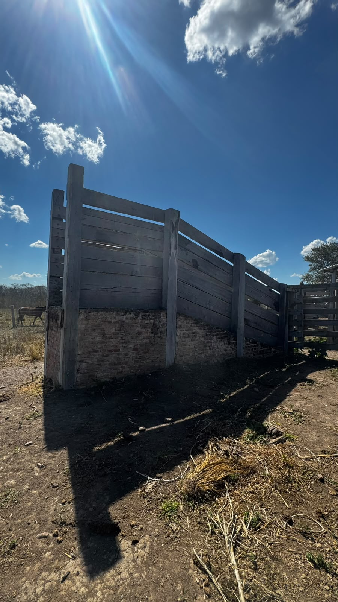
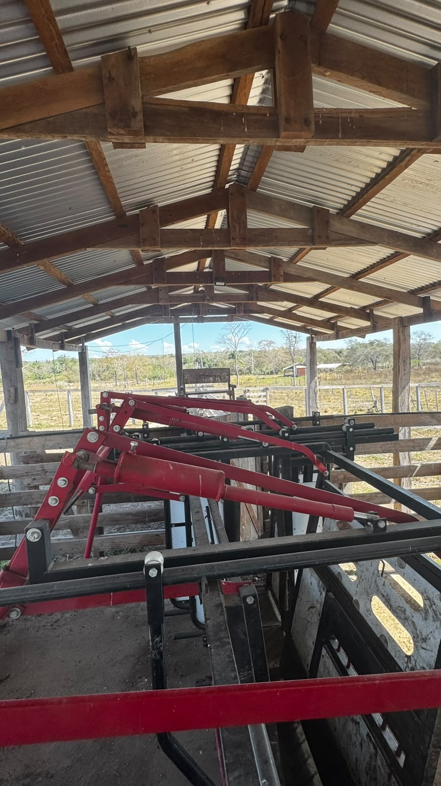
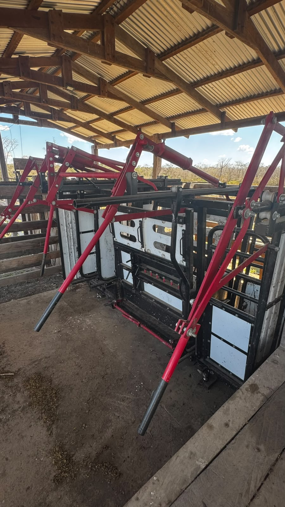
Campamento e infraestructura
Puente de ingreso
Vivienda del encargado
Bomba de agua
Casco del campamento
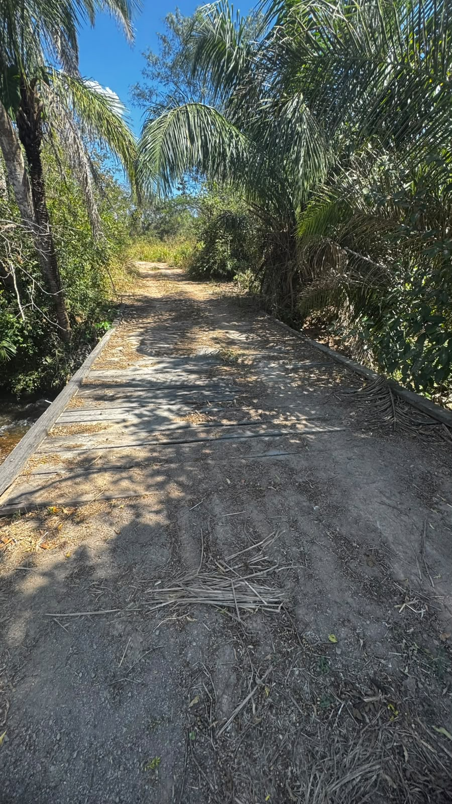
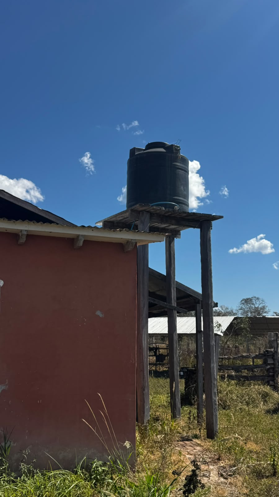
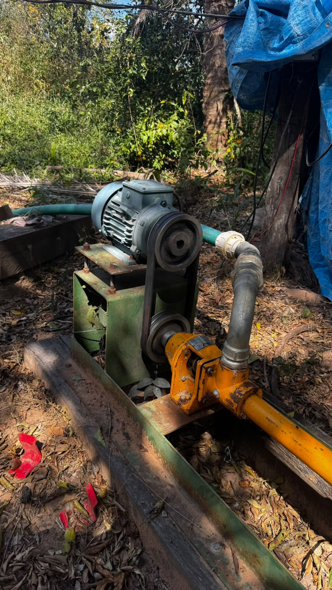
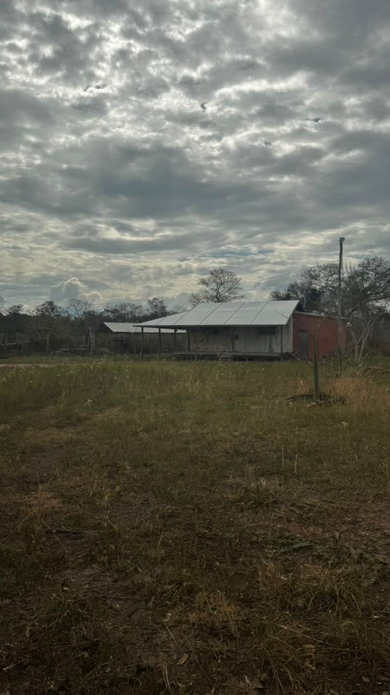
Vistas aéreas
Potreros del fondo (aérea)
Potreros y camino interno
Corral y campamento
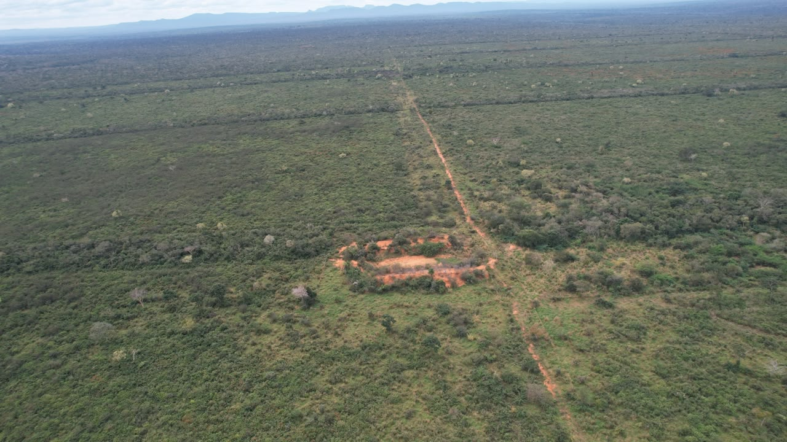
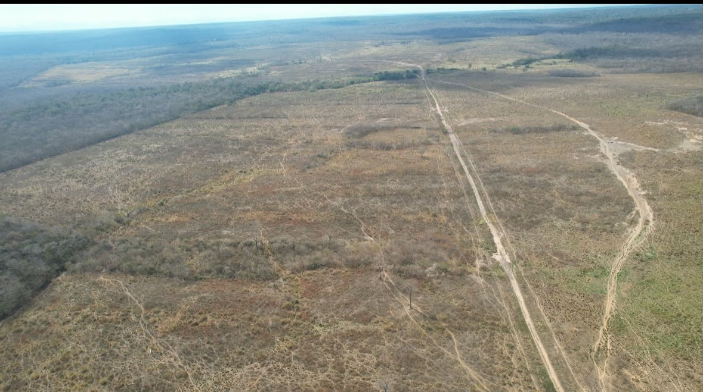
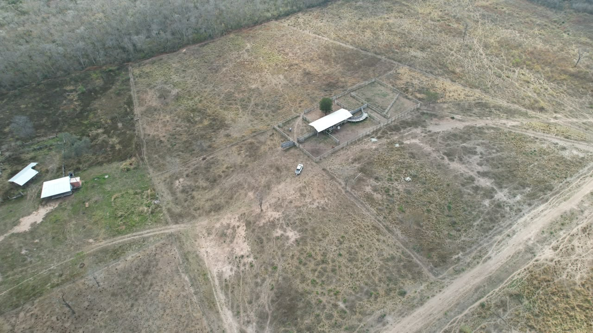